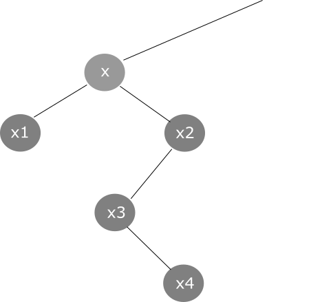

Zadanie 8
Pytanie: Jak będzie wyglądała procedura usunięcia węzła x?

Odpowiedzi:
A) W miejsce x wejdzie x2, w miejsce x2 wejdzie x3, a w miejsce x3 wejdzie x4.
B) W miejsce x wejdzie x1.
C) W miejsce x wejdzie x3, a w miejsce x3 wejdzie x4.
D) Węzeł x3 dostanie kolor po x, a węzeł x4 dostanie dodatkowy kolor po x3.